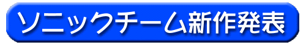
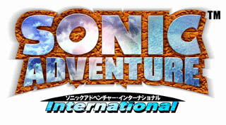
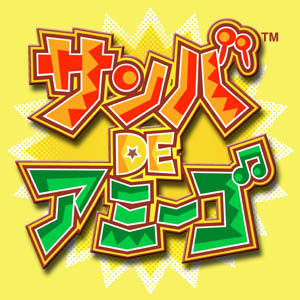
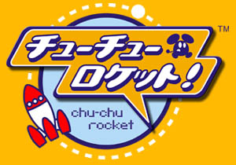
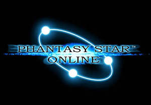

■ ソニックチーム新たな挑戦！ ■
ここにご紹介しているのは、４作品の＜ソニックチーム ロゴ＞です。
あの、伝説とも言うべき一大プロジェクト
『SONIC ADVENTURE』
それを作り上げた後、
ソニックチームを率いる中裕司は考えた。
「ドリームキャストのコンセプトは
『プレイ＆コミュニケーション』だ。
ソニックチームでもドリームキャストの
最大の特徴であるネットワークを
使った新しい作品を作りたい。
それに、コントローラーが４つ差せるんだから、
もっとたくさんの仲間でいっしょに遊べる
ソフトもあるべきじゃないか。
よし！今度は、みんながいっしょにワイワイ楽しめる、
ゲーム本来の面白さに立ち返ったソフトを
ソニックチームで作ってみよう！」…と。
『SONIC ADVENTURE International』
『ファミ通』『ＤＣマガジン』
9月3日発売号 掲載
『サンバ DE アミーゴ』
『ファミ通』『ＤＣマガジン』
9月10日発売号 掲載


『チューチューロケット！』
『ファミ通』『ＤＣマガジン』
9月17日発売号 掲載
『ファンタシースター オンライン』
『ファミ通』『ＤＣマガジン』
9月24日発売号 掲載


各作品の詳細は後に、このホームページはもちろん、
各種雑誌にて掲載しました。
特に『ファミ通』と『ドリームキャスト マガジン』では、
毎週１作品ずつ４週連続！ にて紹介したんですよ。
ひとつのチームが４週連続で新作を発表するのは、
新しい試みで私達もワクワクしました。
また、「東京ゲームショウ」「JAMMAショウ」では
実際にみなさんにご覧いただけましたね。
みなさん お楽しみいただけましたでしょうか？
感想などメールにて送ってもらえるとウレシイです。
｜ Presented By SONIC TEAM 1999 ｜